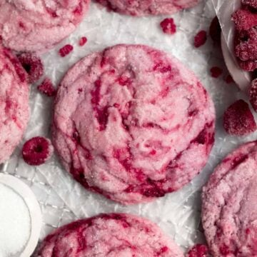

Grannies Favorites: a cookbook
Contents
Raspberry Cookies
PREP TIME = 30 mins
COOK TIME = 15 mins
FREEZE TIME = 1 hour
TOAL TIME = 1 hour 45 mins
SERVINGS = 12 large cookies

INGREDIENTS
Produce
- 1 1/2 cup Raspberry, frozen
Condiments
For the Raspberry Syrup
- 1 cup frozen raspberries
- 1/4 cup granulated sugar
Baking and Spices
- 1 1/2 tsp Baking powder
- 1 1/2 tbsp Cornstarch
-
2 heaping tbsp Cornstarch mixed with 3 tablespoons water
- 3 drops Food coloring, red
- 2 cups Gluten free flour
- 1 5/8 cup Granulated sugar
- 1/2 tsp Kosher salt
Dairy
- 1/2 cup Butter, unsalted
- 3 tbsp Milk
INSTRUCTIONS
For the Raspberry Syrup
-
In a saucepan set over medium heat, cook the 1/4 cup
granulated sugar and 1 cup of raspberries, stirring
constantly, until they are broken down and syrupy.
About 10 min. It will still appear a little chunky and
that's fine.
-
Set a mesh colander over a bowl. Pour the raspberry liquid
through the strainer and set aside to let cool. There should
be about 2-3 tablespoons of raspberry syrup once it's
strained.
For the Cookies
-
Measure out 1/2 cup frozen raspberries. Rough chop the
raspberries into small pieces. Be careful not to over chop;
you don't want raspberry pulp.
Place the chopped raspberries into a freezer safe bowl and
pop back into the freezer until you're ready to add them
into the dough.
-
In a large bowl, whisk together the gluten free flour,
baking powder, 1.5 tablespoons of cornstarch and salt. Set
aside.
-
In a small bowl, mix together the remaining 2 heaping
tablespoons of cornstarch with 3 tablespoons of
water until thin and watery.
-
In a large bowl of an electric mixer fitted with the paddle
attachment, beat the butter stick and 1 1/4 cups of the
sugar until it is soft and creamy.
-
Slowly beat the cornstarch water mixture, milk, the
cooled strained raspberry liquid (about 2-3 tablespoons)
into the creamed butter and sugar. It will look pink and
chunky.
-